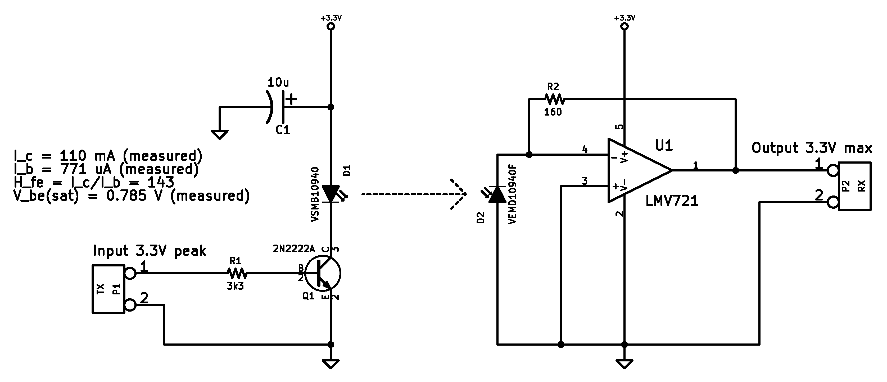
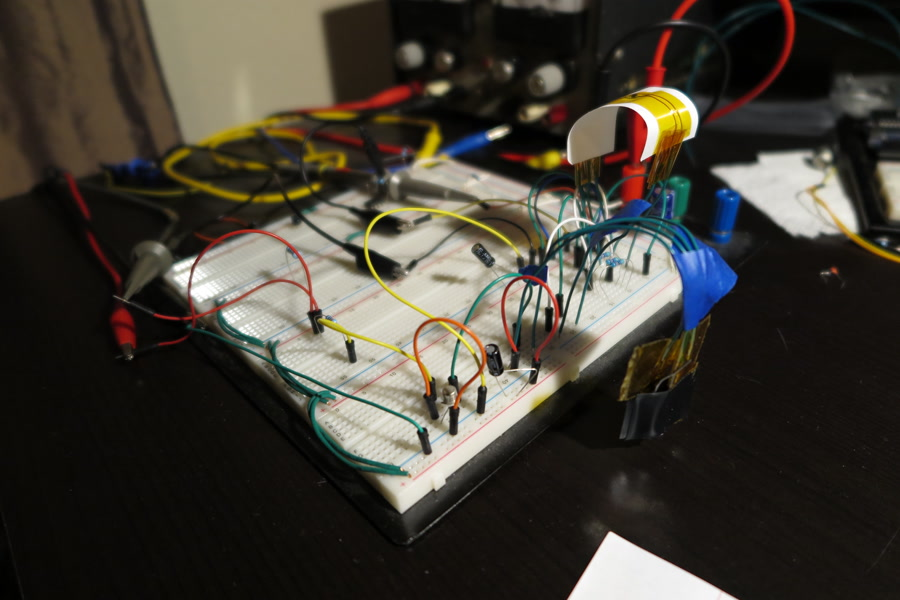

This is an infrared sensor assembly that is designed to detect the proximity of something lightly colored, given a dark background. The idea is that an array of these assemblies would be able to detect the exact position of a white tape on the ground. The array could be used in a line following robot.

Figure 1. A schematic of the prototype (Error: R2 should be 160 kOhm)The principle of operation is to send infrared light out and then detect how much is reflected back. The magnitude of the detected reflection corresponds to proximity.

Figure 2. A breadboarded prototype (side view)The circuit was designed to fit into a 3.3V system, to receive a digital input, and to provide an analog output corresponding to proximity. It also provided a way to remove slow ambient infrared noise from the main signal. First, while TX (the input to the transmitting LED side) is low, the RX (output of the op-amp) is read by an ADC to determine the ambient noise level (A). Then, the TX is pulsed high, and the ADC is read again (B). The signal without ambient noise is the second reading minus the first reading (B-A). This works reliably when the noise is near DC. Higher frequency AC noise can be rejected by averaging many readings, which is a low-pass.
The circuit seems to work pretty reliably given a 30 kHz square input (as a reference, the Atmel ATMega's ADC is about 15 ksps). At higher frequency inputs, the receiving side can't really keep up. A quick hack to compensate for a slow rising edge is to place a small capacitance (<= 10 nF) in parallel with the transistor's bias resistor. This is known as a "speed up capacitor," which gives the transistor an extra nudge for those higher frequencies. A 10 nF capacitor actually causes some overshoot on the transmitting LED, which compensates for a droopy leading edge on the recieving side.
10/6/16: In Figure 2, R2 should be 160 kOhms instead of 160 Ohms.
Written on the 6th of January in 2016
{kind=link}
{kind=link}